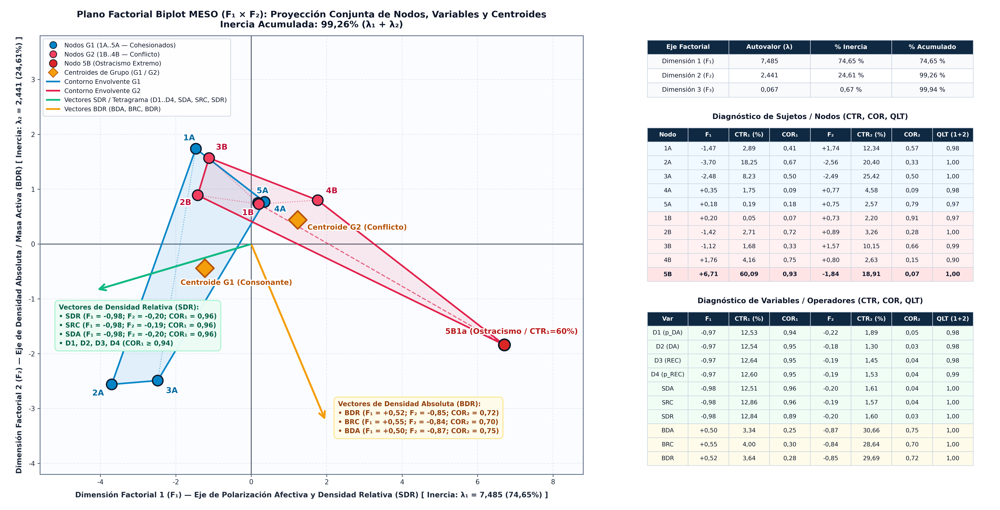
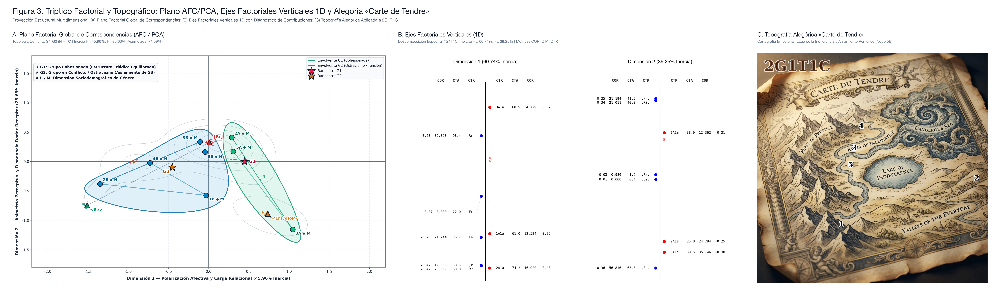
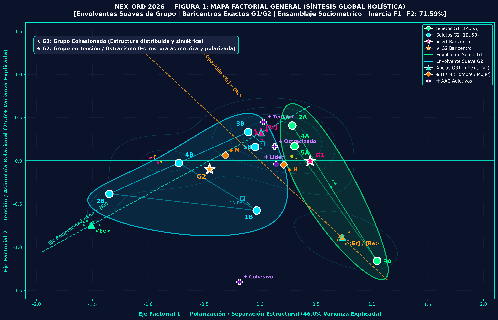
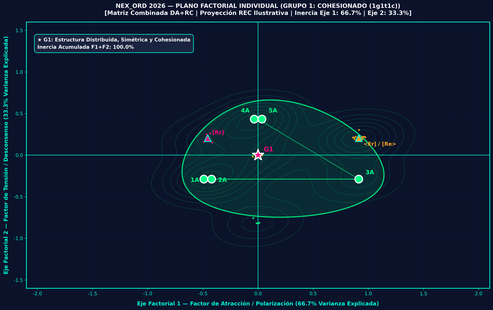

| ID | Grupo | 1º | 2º | 3º | 4º | 5º | Elecciones (E) | Rechazos (R) | pE | pR | Matriz Instrumental SMIb (A1 A2 A3 A4) | Matriz Integrada SMIa (Q81) |
|---|---|---|---|---|---|---|---|---|---|---|---|---|
| 1A1a | G1 Cohesión | 1 | 2 | 3 | 4 | 5 | 1, 2 | 5, 4 | 1 | 5 | [AAAA, 0BB0, 0000, 0b00, aaaa] | [<Ee>, ¡Ee!, ¡¿?!, ¡R?!, [Rr]] |
| 2A1a | G1 Cohesión | 3 | 1 | 2 | 5 | 4 | 3, 1 | 4, 5 | 3 | 4 | [0BB0, 0000, AAAA, aaa0, 0b00] | [¡Ee!, <Ee>, <Ee>, [Rr]!, ¡R?!] |
| 3A1a | G1 Cohesión | 2 | 3 | 1 | 5 | 4 | 2, 3 | 4, 5 | 2 | 4 | [0000, AAAA, 0BB0, aaaa, 0bb0] | [¡¿?!, <Ee>, ¡Ee!, [Rr], ¡Rr!] |
| 4A1a | G1 Cohesión | 4 | 5 | 1 | 2 | 3 | 4, 5 | 3, 2 | 4 | 3 | [00c0, 0baa, aabb, AAAA, 0BB0] | [¡¿r!, ¡Rr], [Rr], <Ee>, ¡Ee!] |
| 5A1a | G1 Cohesión | 5 | 4 | 2 | 3 | 1 | 5, 4 | 1, 3 | 5 | 1 | [aaaa, 00b0, 0bc0, 0BB0, AAAA] | [[Rr], ¡¿r!, ¡Rr!, ¡Ee!, <Ee>] |
| 1B1a | G2 Fricción | 1 | 2 | 3 | 4 | 5 | 1, 2 | 5, 4 | 1 | 5 | [AAAA, 0BB0, 0000, 0bb0, aaaa] | [<Ee>, ¡Ee!, ¡¿?!, ¡Rr!, [Rr]] |
| 2B1a | G2 Fricción | 2 | 1 | 3 | 4 | 5 | 2, 1 | 5, 4 | 2 | 5 | [0BB0, AAAA, 00C0, 0b00, aa00] | [¡Ee!, <Ee>, ¡¿e!, ¡R?!, [R?!]] |
| 3B1a | G2 Fricción | 3 | 2 | 1 | 4 | 5 | 3, 2 | 5, 4 | 3 | 5 | [0000, 0B00, AAAA, 0Bb0, aaa0] | [¡¿?!, ¡E?!, <Ee>, ¡Re!, [Rr]] |
| 4B1a | G2 Fricción | 4 | 3 | 2 | 1 | 5 | 4, 3 | 5, 1 | 4 | 5 | [0ba0, 00b0, 0BC0, AAAA, aaB0] | [¡Rr!, ¡¿r!, ¡Er!, <Ee>, [Re!]] |
| 5B1a | 🚨 5B1a Ostracismo | 5 | 4 | 2 | 3 | 1 | 5, 4 | 1, 3 | 5 | 1 | [aaaa, 00bb, 0bcc, 0Bdd, AAAA] | [[Rr], ¡¿r], ¡Rr], ¡Er], <Ee>] |

El colectivo presenta un clima armónico de alta reciprocidad afectiva con articulación en dos polos cooperantes: el núcleo atractor {1A, 2A, 3A} coordinado por el sujeto 2A (líder socio-afectivo), y el subsistema consonante simétrico {4A, 5A}. Ausencia total de rechazos severos o tensiones lesivas.
El colectivo evidencia una disfunción severa caracterizada por el consenso unánime de rechazo (4 de 4 pares) proyectado contra el participante 5B1a. La acumulación de rechazos sitúa su densidad recibida en SREC = -34,12 y dispara el desajuste a Dif-DR = 133,00, aislándolo en la periferia crítica.
| Dimensión / Operador | Grupo 1 (1g1t1c: Cohesión) | Grupo 2 (2g1t1c: Ostracismo) | Contraste / Significado Práctico |
|---|---|---|---|
| Masa Bruta Invariante BDR̄ | 8,00 | 8,00 | ⚖️ 100% Invariante (Ley de Conservación Relacional) |
| Densidad Neta SDR̄ | -0,91 | -1,47 | Fricción neta 61% más severa en G2 |
| Desviación SDR (σ) | 1,84 | 3,12 | Asimetría y fragmentación en G2 |
| Desajuste Máximo Dif-DR | 52,45 (Nodo 3A) | 133,00 (Nodo 5B) | 🚨 Aislamiento selectivo sobre 5B1a |
| Gap Espectral Fiedler (λ2) | 1,84 | 0,42 | Conectividad robusta en G1 vs fragilidad en G2 |
| Frustración de Heider (λ1) | 0,12 | 0,89 | Tensión vincular y tríadas rotas en G2 |
| Variedad Grassmann Gr(2,5) | d_G = 1,455 rad (83,37°) • θ1 = 45,10°, θ2 = 88,31° | Ortogonalidad funcional entre regímenes | |



